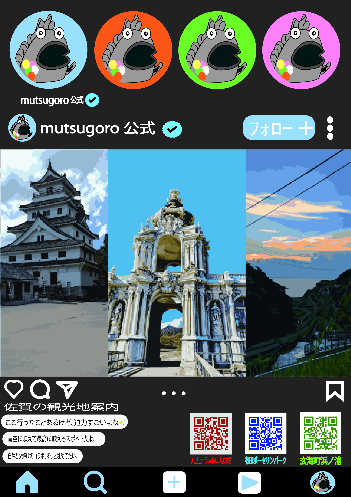
佐賀観光地案内
PORTFOLIO / RYOTO WATANABE
地域や日常の中で見つけた題材を、グラフィックやビジュアルにまとめています。課題制作や自主制作を通して、伝えたい内容に合う見せ方を考えました。
身近な場所やものを観察し、そこにある魅力を見つけて伝えることを意識しています。作品ごとに題材や目的が異なるため、内容に合わせて構成や表現を考えています。
WORKS / SELECTED

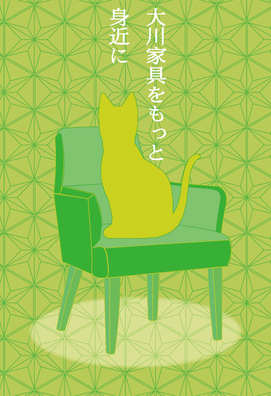
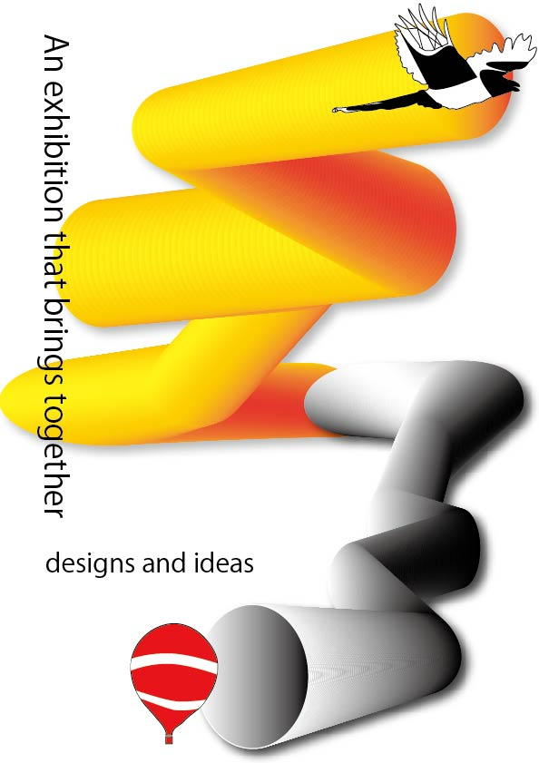
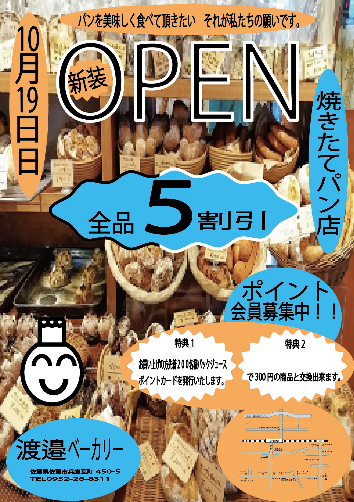
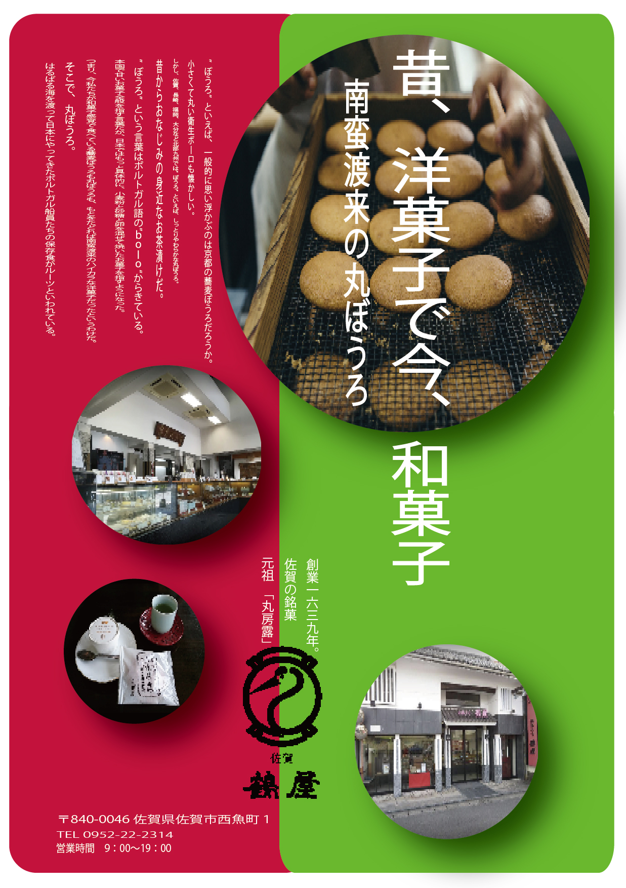
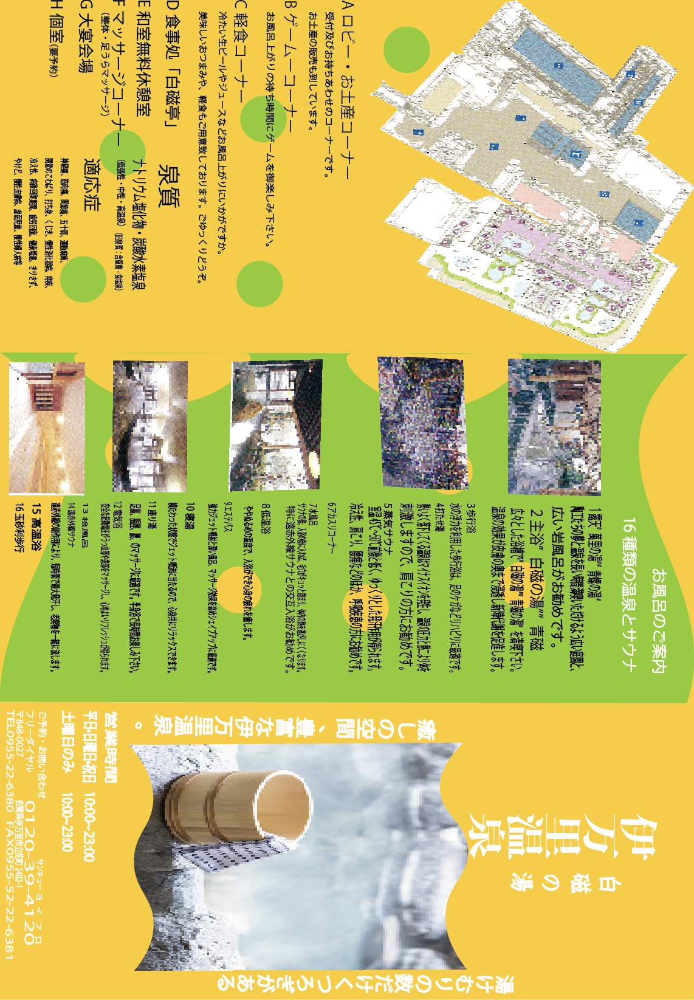
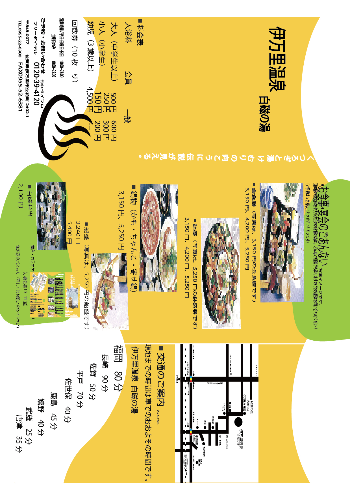
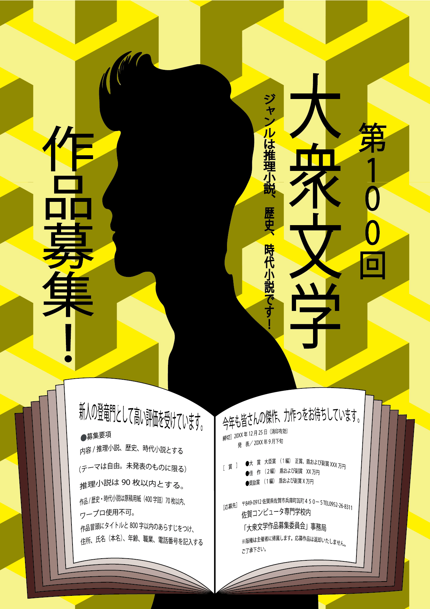
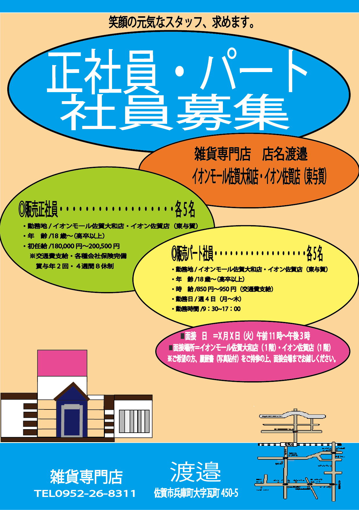
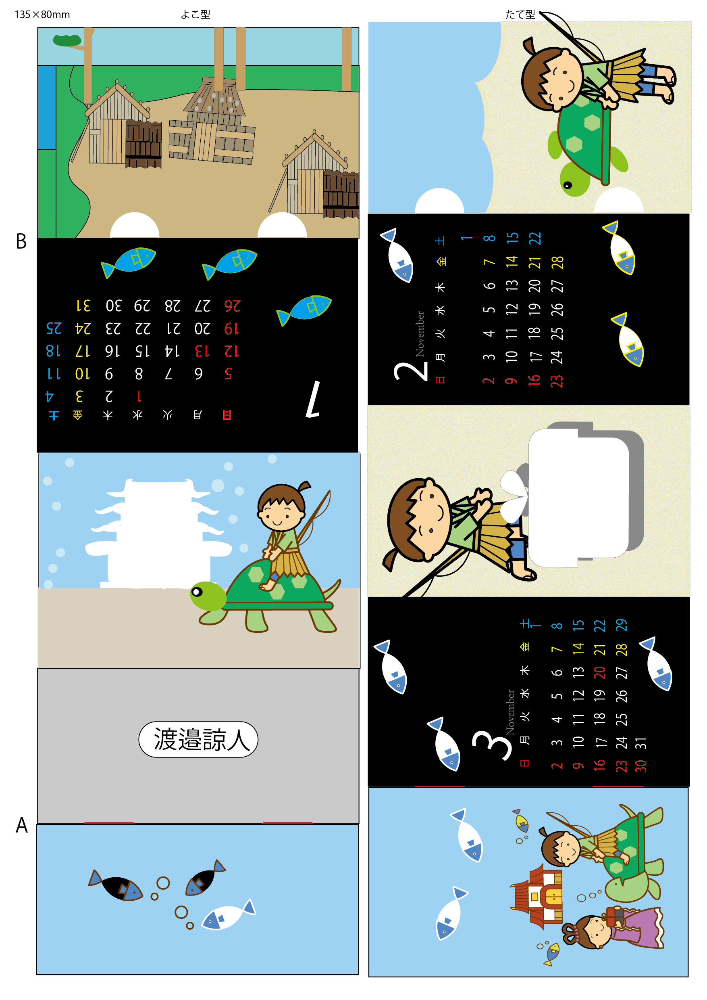
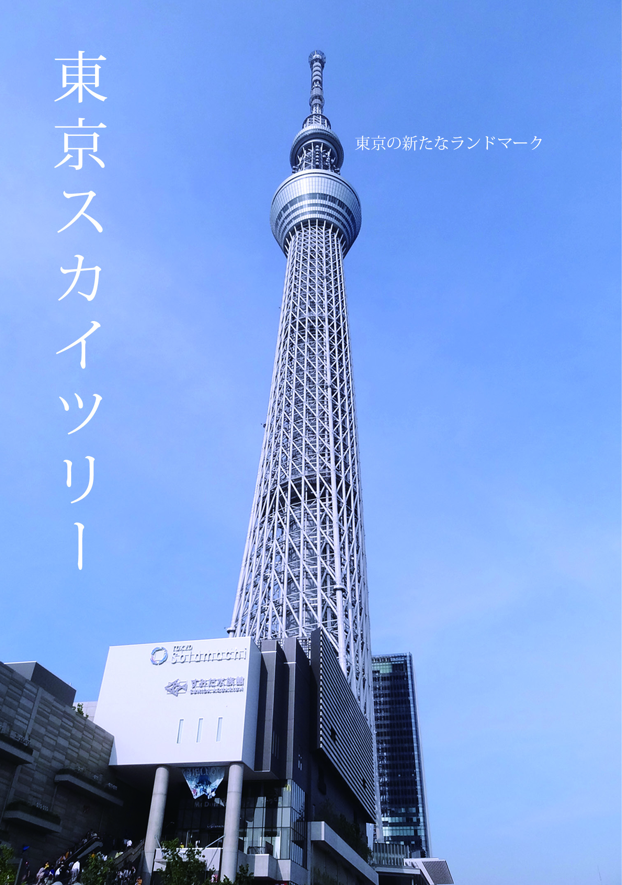
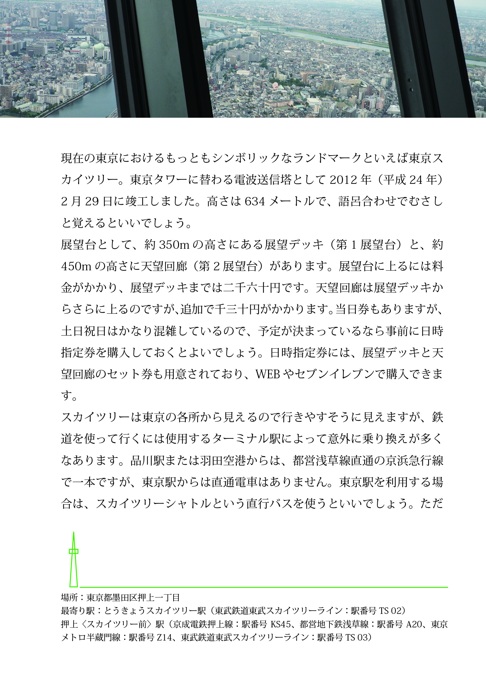
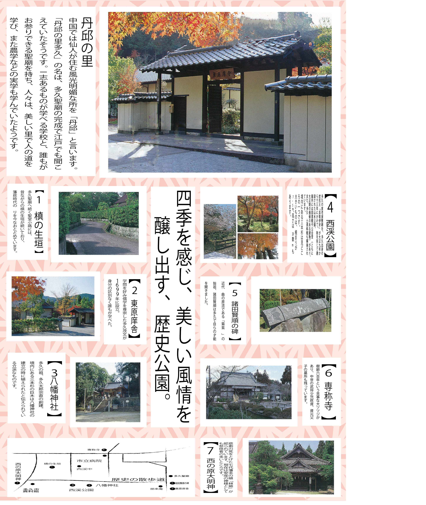

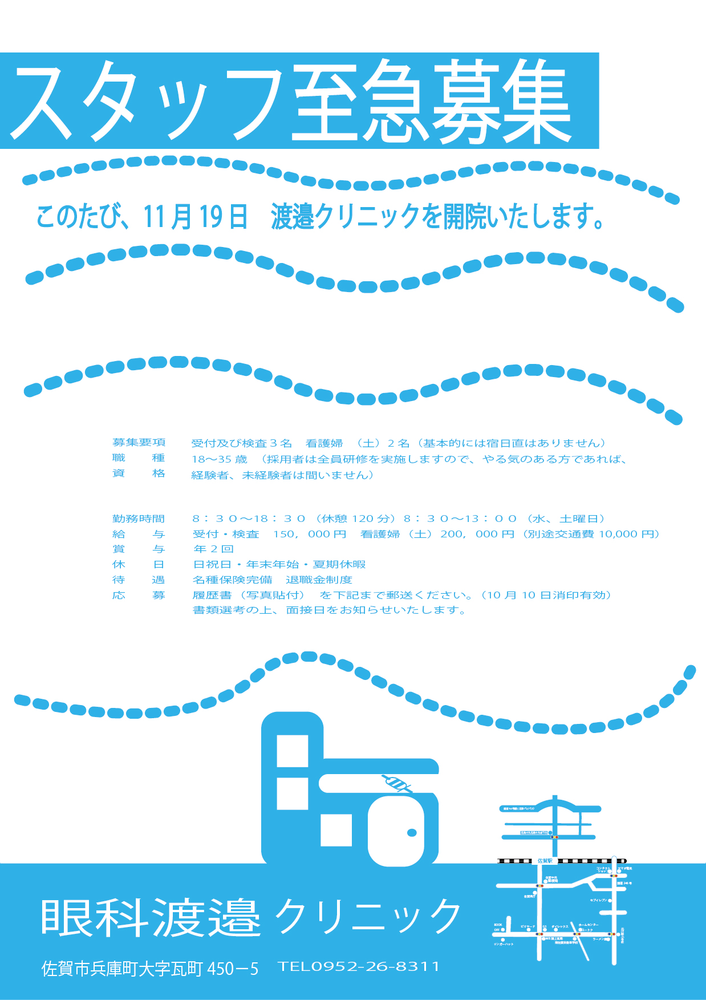